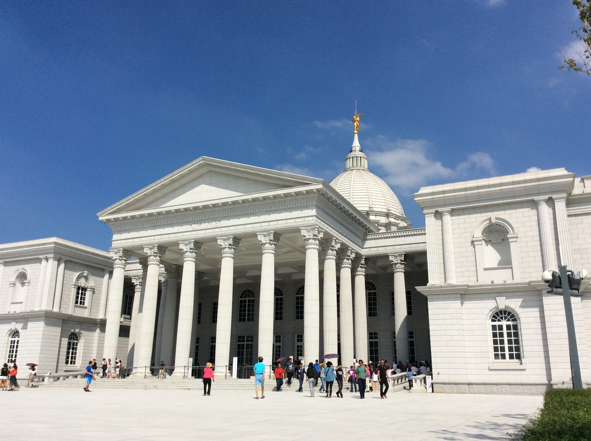
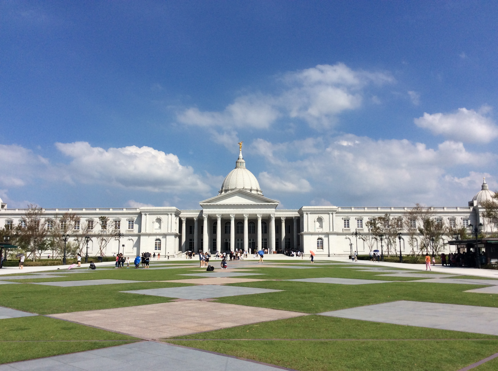
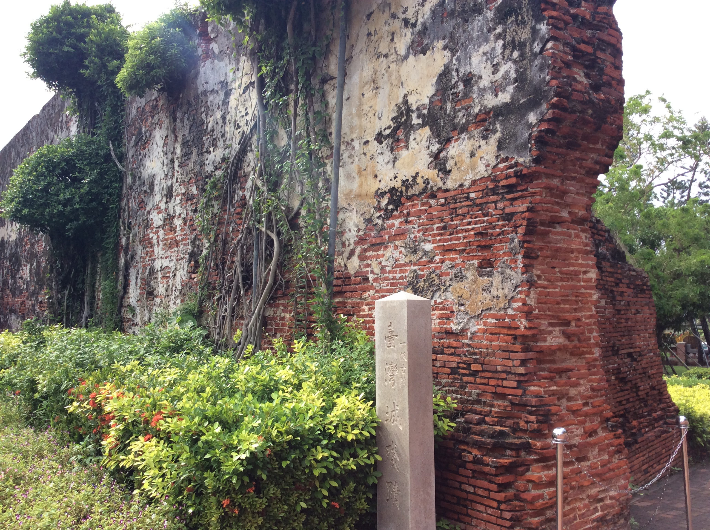
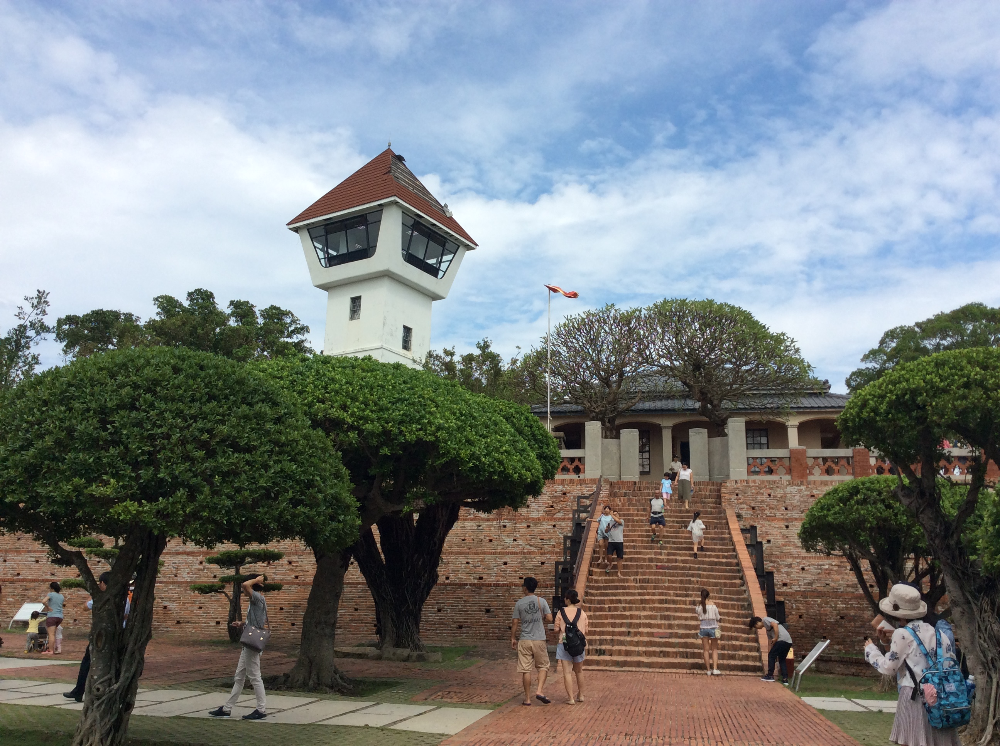
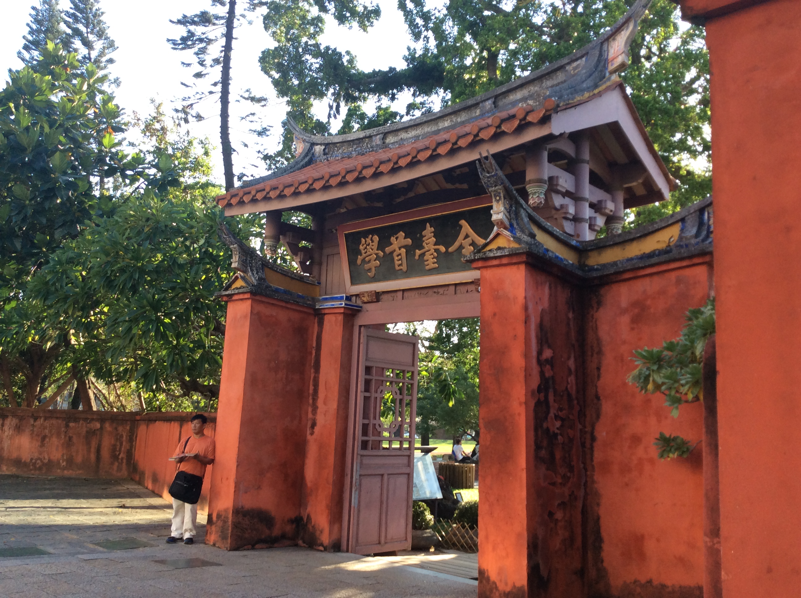
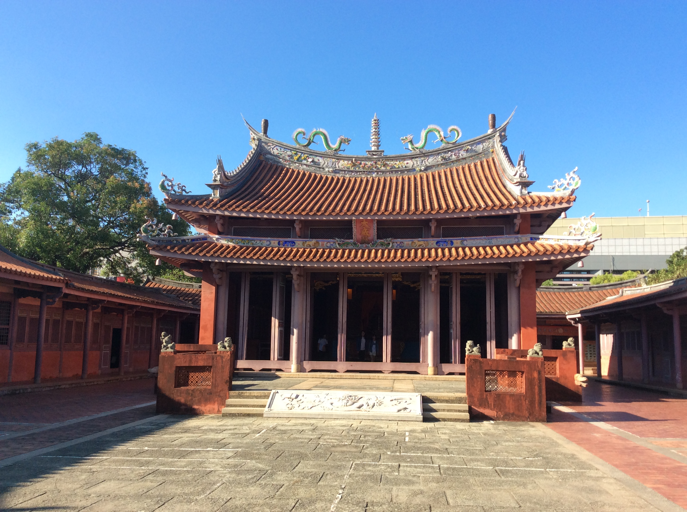
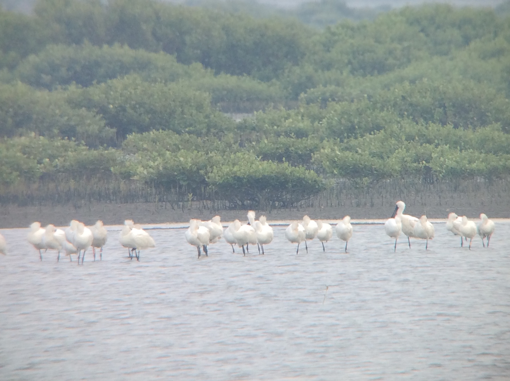
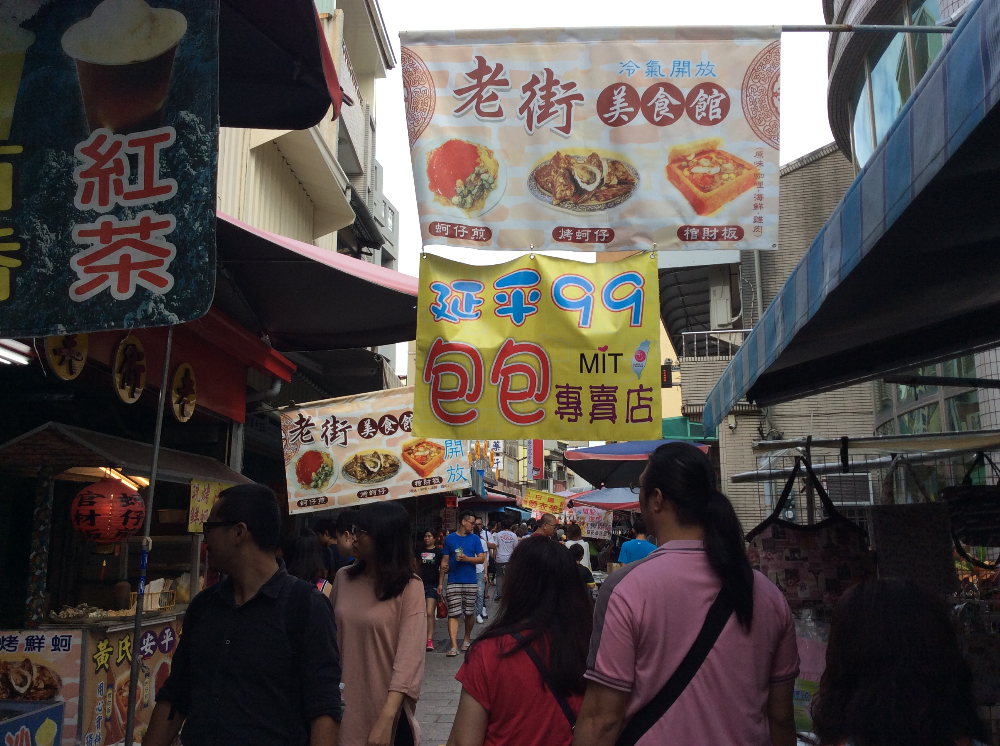
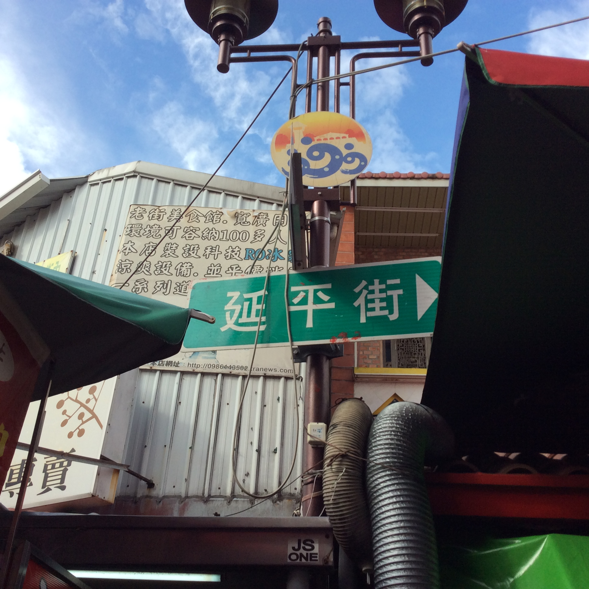
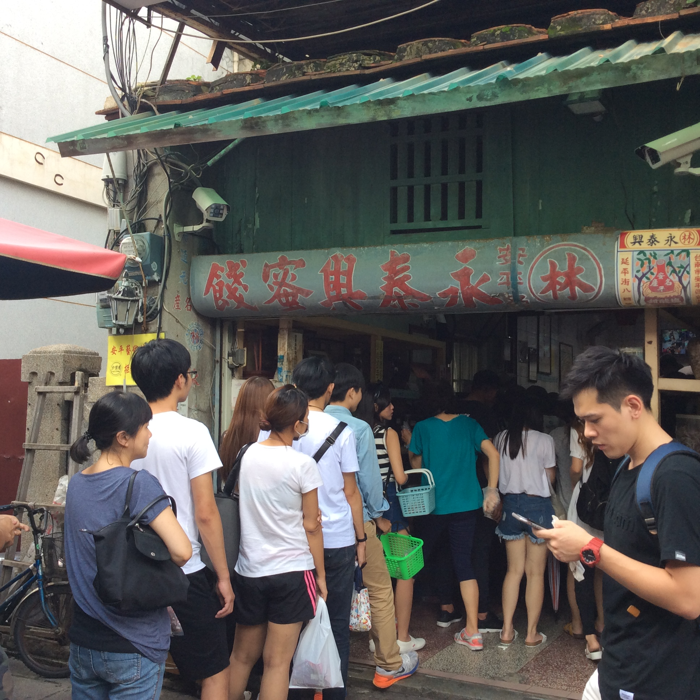

|
|
南臺灣 |
| 奇美博物館 | ||
|
奇美博物館位於台南市都會公園，是奇美實業建設得。館內展示奇美實業創辦人許文龍先生的私人收藏、包括西洋藝術作品、各式各樣的樂器、兵器和化石等，有4000多個展示品，非常豐富！即使你沒有買門票，也可以欣賞周圍公園的風景。
公園裡有ㄧ座大理石噴泉，還有ㄧ座白色的大橋，上面有許多希臘神話中的神的雕像。 博物館內，有5個展覽館，和ㄧ個畫廊。 |
 |  |
| 安平古堡 | ||
|  |  |
安平古堡 （也叫熱蘭遮城）是荷蘭人在西元1624年到西元1634年建設的。1662年時，鄭成功打敗了荷蘭人，而熱蘭遮城被改名為「安平城」。城裡的一部分變成了當時的政府。日治時期時 （1895年到1945年），城被嚴重破壞。之後台灣政府
整修廢慌，現今已成為一個受歡迎的旅遊景點。
如今熱蘭遮城只剩下一道城牆，是台南市一級古蹟。安平古堡四周，有許多100年老的古炮，是政府為了促進觀光而拿來得。 在磚做的平台上，有一個監視塔（現在已經變成瞭望台），是日治時期（1945年）建設得。1975年時，政府把它裝修，牆壁上白漆，讓遊客可以上去。 |
| 台南孔廟 | ||
|
台南孔廟是明鄭時期 1665年（鄭成功的兒子鄭鄭經）時所建設得，是當時的教育機構。
在前門上寫得「全台首學」，表示是臺灣的第一座學校。經過政府的多次維修之後，已經成了重要的觀光景點，也是台南市一級古蹟。 |
 |  |
| 台江國家公園 | |||||||||||||||||||||||||||||||||||
|  |

|
台江國家公園是台灣台灣的地八座國家公園，在2009年設立的，面積有39,310公頃，包含四草濕地、曾文溪河口濕地、鹽水溪河口濕地等。
曾文溪河口濕地占了3,128公頃，調查發現：有250種貝類、240種魚類、53種螃蟹、還有豐富的紅樹林。黑面琵鷺每年十月會從中國北部飛來台灣渡冬，隔年三月會離。 |
| 安平老街 | |||
| 安平老街適合喜歡逛街的遊客，有吃喝玩樂，去安平一定要去這裡！ |  |  |  |